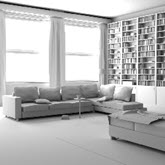

Ai 区域光
四个 Ai 区域光穿过窗户
用于对室内进行照明的常见方法是在窗户外部放置指向房间内部的区域光。请务必注意灯光的大小和位置。如果灯光太靠近窗框，可能会导致靠近窗户的区域出现漂白效果（参见下面的色调映射）。所有示例图像中使用的灯光采样值均为 3。
请记住，您也可以将 directional_light 与窗户四边形 area_lights 组合在一起，实现与 skydome_light 类似的效果。
- 创建四个区域光，并将它们放置在窗户外，如左下图所示。下面是场景中四个_区域_光所用的设置。其中，“曝光”(Exposure)已增加至 18，“灯光形状”(Light Shape)*已设置为四边形(quad)，并且“采样数”(Samples)*已增加至 3，以便用于最终场景渲染。
Ai 区域光形状设置为“四边形”(Quad)
对于含有玻璃的窗户，应将 area_lights 放在玻璃前面，这样 Arnold 就不需要处理玻璃相交处。但是，对于非常见形状的窗户，一种更简单的做法是将区域光放在窗户的正后方，使 quad_light 覆盖整个窗户。
间接漫反射光线深度
在现实生活中，内部场景的灯光会出现比外部场景更多的反弹，因此，如果希望在场景中获得更多次级反弹照明，则应该增加该值。
下图显示了在“渲染设置”(Render Settings)中增加diffuse_ray_depth 的效果。请注意，渲染时间将随着反弹次数的增加而线性增加。
|  | ||
| 1 | 2 | 3 |
采样噪波
渲染室内场景时，出现噪波是非常常见的现象。这可能是因为灯光的采样数不够，或者是“GI 漫反射光线”(Gi Diffuse Rays)设定得不够高。
将_漫反射_光线设置为 0 后，我们便可以将注意力集中在灯光采样数上。在下图中，可在房间的角落中清晰地看到阴影噪波。通过逐渐增加灯光采样数，可以改善阴影的质量，同时不显著增加渲染时间。将灯光的“采样数”(Samples)增大为 3 便足以充分降低阴影噪波量。
| “GI 漫反射”(GI Diffuse)设置为 0（已禁用）。灯光噪波更易于识别。 | 将 area_light 的采样数增加至 3 可解决噪波问题 | 阴影噪波和_漫反射_噪波（二者很难区分）。 |
漫反射采样数
完成灯光采样数微调后，便可以关注“漫反射”(Diffuse)噪波。在本例中，将“漫反射”(Diffuse)采样数增大为 5 即可提供干净的求解。
 |
|
| 1 | 5 |
区域光采样数
在下面的示例图像中，对渲染一个大型区域光、两个区域光和四个区域光的差别进行了比较。
| 一个区域光：6 分 38 秒 | 两个区域光：8 分 41 秒 | 四个区域光：12 分 30 秒 |
对于每个灯光，Arnold 会跟踪 9 条光线，因而对于四个灯光而言，总共需要跟踪 36 条光线，这与使用一个灯光时只需跟踪 9 条光线形成了鲜明的对比。因此，使用小型灯光进行渲染所花费的时间比使用一个大型灯光进行渲染所花费的时间更长。但是，即使灯光采样数相同（本例中为 3），仅使用一个大型区域光也会产生更多噪波。这在书架周围的区域中更加明显。
| 四个区域光 | 一个区域光（在阴影中出现更多噪波） |
灯光衰退过滤器
近距衰减
窗户周围的区域非常明亮，以致于出现了漂白现象。解决此问题的一种方法是使用色调映射（参见下文），另一种方法则是使用灯光衰退过滤器。
- 将一个 light_decay 过滤器连接到所有四个区域_灯光。*借助此过滤器，可以使用“使用近距衰减”(Use Near Attenuation)属性控制灯光的衰减。在下面右侧的图像中，“近距开始”(Near Start)设定为 40，“近距结束”(Near End)*设定为 200。您可以看到，与未使用_灯光衰退_过滤器的渲染结果相比，地面上靠近灯光区域的过爆程度大大降低（已将 _diffuse_samples 设置为 0，以便更清楚地查看效果）。
| 未使用 light_decay 过滤器（窗户周围的区域出现漂白现象） | 使用 light_decay 过滤器改进灯光衰减 |
远距衰减
“远距衰减”属性的工作原理类似于普通衰退，但您可以指定开始和结束距离。这样便可以通过设置 end_distance 来更好地控制房间内填充的灯光量。下面是一个简单的室内场景，显示了改变 light_decay 过滤器的_“远距结束”(Far End)_属性的效果。请注意它对地板的镜面反射的影响。
| _far_end_：0.05 | _far_end_：1 | _far_end_：2 |
色调映射
修复窗户周围漂白区域的一种简单方法是使用后期处理软件对图像进行色调映射。
- 将场景渲染为 32 位 EXR 文件。这样就能够有足够的色调范围用来在后期处理中进行调整。
| 色调映射之前（窗户周围的区域出现漂白现象） | 色调映射之后 |
使用 HDRI 的区域光
我们可以向进入房间的灯光添加一些看上去更自然的颜色。这可以通过结合使用 HDRI 和区域光来实现。
- 将 HDRI 连接到 _area_light.color_。
减小灯光的强度，直至其位于应当足以看到 HDRI 效果的常规范围内。但是，要判断纹理贴图是否已正确映射到灯光可能并不是一件容易的事情。为了更清楚地看到效果，可以创建一个反射球体并将其放置在窗户前。通过此方法，就可以看到球体反射的 HDRI。
 |
|
| 单个 area_light 进行缩放以适配所有窗户 | HDRI -> area_light |
- 创建一个球体并为它指定一个 standard_surface 着色器。将 base_weight 减小为 0，将 specular_weight 增大为 1，并将 specular_roughness 减小为 0。在场景中渲染该球体。此时应该会看到球体反射的 HDRI，如下面右侧图像中所示。
| 映射到区域光的 HDRI 的反射在球体上可见 | 反射球体放置在窗户前 |
无法将 Arnold 的灯光设置为对摄影机可见。但是，mesh_light 中确实有“灯光可见”(Light Visible) 选项。
启用_“灯光可见”(Light Visible)_时的 _mesh_light_（多边形平面）